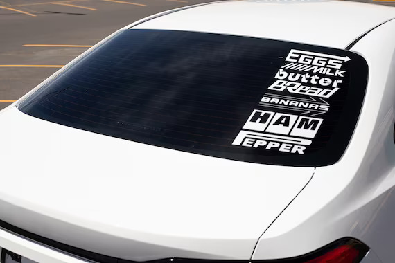

Patrocinadors
Michelin
Michelin és conegut per ser un patrocinador clau en diverses competicions automobilístiques, com les carreres de resistència, el ral·li i la Fórmula E. La marca es destaca pel seu enfocament en la innovació i la seguretat en els seus pneumàtics, la qual cosa la converteix en una opció ideal per a donar suport a esdeveniments d'alta competitivitat. La seva associació amb aquestes carreres li permet provar i desenvolupar tecnologies avançades, així com promocionar la seva imatge de qualitat i rendiment.
Audi
Audi ha estat històricament involucrada en l'automobilisme, patrocinant i competint en esdeveniments com les 24 Hores de Le Mans i el Campionat Mundial de Ral·li. El seu compromís amb l'enginyeria precisa i l'acompliment excepcional es reflecteix en la seva participació en carreres d'alt nivell. Audi utilitza aquests patrocinis per a ressaltar la seva filosofia de "Vorsprung durch Technik" (avanço a través de la tecnologia), la qual cosa emfatitza la seva dedicació a la innovació i l'avanç automotriu.
Volkswagen
Volkswagen també ha estat un patrocinador destacat en diverses competicions, incloent-hi el ral·li i l'automobilisme de circuits. La seva participació en l'automobilisme és un reflex del seu compromís amb la mobilitat sostenible i el desenvolupament tecnològic, la qual cosa s'alinea amb la seva estratègia d'oferir vehicles que combinin eficiència i rendiment. A través dels seus patrocinis, Volkswagen busca connectar amb els entusiastes de l'automobilisme i promoure la seva imatge de marca moderna i dinàmica.